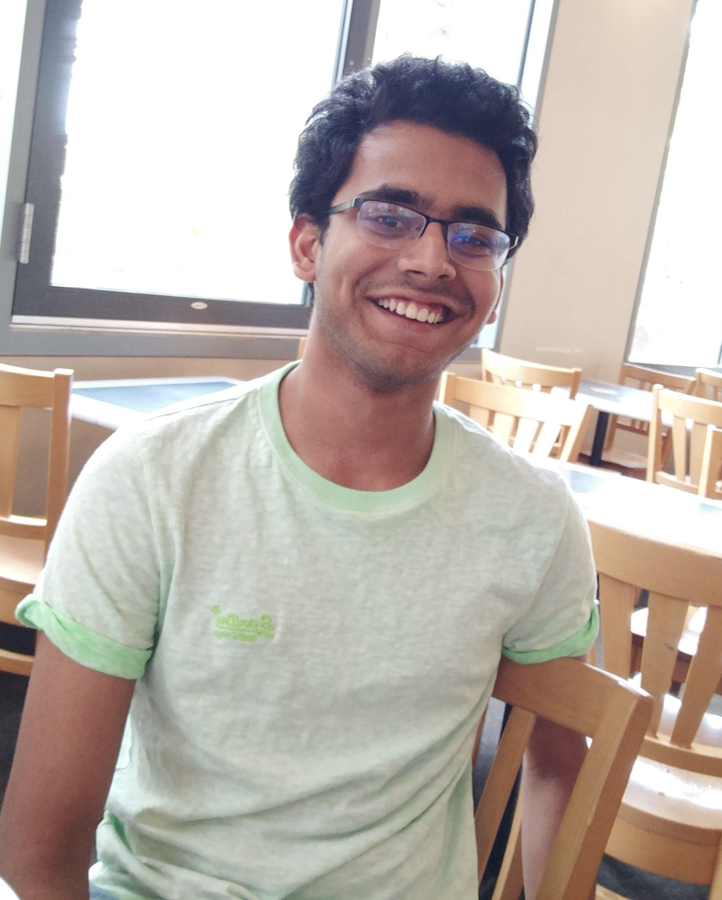

|  | I am an incoming PhD student in Applied and Computational Mathematics at Princeton University. I am currently a predoctoral research fellow at Microsoft Research in the Algorithms and Theory Group, where my advisor is Ravishankar Krishnaswamy. I recently completed my undergraduate degree in mathematics from UCLA, where my advisor was Amit Sahai in the UCLA Theory Group. I've also done research in combinatorics with Hunter Spink. I am passionate about theoretical computer science, and in particular, my research interests include algorithms and combinatorics. Here is my CV. My email is varunsiva@ucla.edu. |
Composable Coresets for Determinant Maximization: Greedy is Almost Optimal
Siddharth Gollapudi, Sepideh Mahabadi and Varun Sivashankar
A (2.96 + ε)-Approximation for Fair Joint Replenishment with Outliers
Varun Suriyanarayana, Varun Sivashankar, Siddharth Gollapudi, David Shmoys
MembrANNe: Graph Algorithms for Filtered Approximate Nearest Neighbor Search
[paper]
Siddharth Gollapudi, Neel Karia, Varun Sivashankar, Ravishankar Krishnaswamy, Harsha Vardhan Simhadri, Nikit Begwani, Swapnil Raz, Yiyong Lin, Yin Zhang, Neelam Mahapatro, Premkumar Srinivasan and Amit Singh
The Web Conference (WWW), 2023
Extremal Uniquely Resolvable Multisets [paper]
Varun Sivashankar
SIAM Journal on Discrete Mathematics (SIDMA), 2023
Relinearization Attack on LPN over Large Fields
[paper]
Paul Lou, Amit Sahai and Varun Sivashankar
The ACM Computer Journal, 2023
Conference for Failed Approaches and Insightful Losses in Cryptology (CFAIL), 2022
Dean's Prize for Excellence in Research in Mathematics at UCLA.
Shivakumar Endowed Scholarship for Research in Computer Science at UCLA.
Google CS Research Mentorship Program (CSRMP) Fellow.
Neo Scholar (neo.com).
Course Reader for CS M146 (Machine Learning) at UCLA.
Assistant Instructor at the Los Angeles Math Circle.
AI Workshops Officer at UCLA ACM AI.
University of California, Los Angeles (2018-22)
B.S. Mathematics (Honors Program). GPA: 3.98/4.00 (summa cum laude)
Email: varunsiva@ucla.edu
Google Scholar: Varun Sivashankar
LinkedIn: varun-sivashankar
GitHub: varunsivashankar
Quora: Varun-Sivashankar
World Cubing Association: Varun Sivashankar